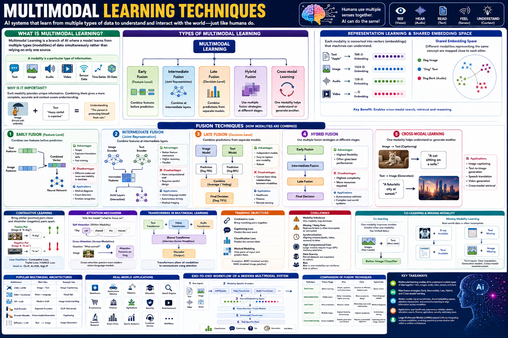

Master the encoder-decoder architecture with attention — the backbone of translation, summarization, and multimodal learning.
Sequence-to-Sequence (Seq2Seq) models map an input sequence to an output sequence using an encoder-decoder framework with attention. This guide covers the 10 most important hyperparameters for Seq2Seq models, from hidden sizes and attention mechanisms to teacher forcing and beam search, with practical PyTorch examples and a runnable translation demo.

h₁,h₂,…,hTαt = softmax(score(st,hi))st = RNN(yt-1,st-1,ct)📊 Seq2Seq pipeline — encoder hidden states, attention-weighted context, and autoregressive decoder
Dimensionality of the encoder RNN hidden state. Larger sizes capture richer source representations but increase computation.
Dimensionality of the decoder RNN hidden state. Must match the encoder's output size when using attention.
Computes alignment scores between decoder state and encoder outputs. Additive (Bahdanau) and dot-product (Luong) are the two main types.
Dimensionality of the token embedding vectors for source and target vocabularies. Shared embeddings can reduce parameters.
Dropout applied to RNN layers and embeddings. Essential for preventing overfitting in Seq2Seq models, especially with small parallel corpora.
Seq2Seq models use moderate learning rates. RNN-based models are less sensitive than transformers but still need careful tuning.
Seq2Seq batches contain variable-length sequences. Dynamic batching with bucketing groups similar-length sequences for efficiency.
Stacked RNN layers increase representational capacity. Typically 2–4 layers for both encoder and decoder.
Maximum token length for source and target sequences. Longer sequences capture more context but increase memory and training time.
Next-token cross-entropy with padding ignored. The standard objective for autoregressive Seq2Seq training.
A Seq2Seq model has three core components: an encoder that compresses the source sequence into hidden states, an attention mechanism that computes alignment weights, and a decoder that autoregressively generates the target sequence.
Every symbol in the Seq2Seq architecture explained — from encoder recurrence to attention-weighted decoding.
Uses a learnable feed-forward network to compute alignment scores. More flexible but slightly more parameters than Luong.
Processes the source sequence both forward and backward, producing richer context-aware representations at each position.
Seq2Seq training uses teacher forcing with scheduled sampling and careful sequence handling for efficient learning.
During training, the ground-truth token (not the model's prediction) is fed as the next input. Scheduled sampling gradually transitions to using model predictions.
Group sequences of similar length into buckets. Minimizes wasted computation on padding tokens within each batch.
Reduce LR when validation BLEU/accuracy plateaus. Seq2Seq models benefit from step-based or plateau-based decay.
Keeps top-k most probable partial sequences at each decoding step. Beam width trades quality for speed during inference.
RNN-based Seq2Seq models need strong regularization, especially with limited parallel data. These techniques prevent overfitting and improve generalization.
Apply dropout to embedding layers, between RNN layers, and on recurrent connections. Higher rates for smaller datasets.
Clips gradients to a maximum norm. Essential for RNN-based models to prevent exploding gradients in long sequences.
Softens one-hot targets by reserving probability mass for non-target tokens. Reduces overconfidence in Seq2Seq output distributions.
Stop training when validation BLEU or loss plateaus. Restore best weights for optimal generalization.
A complete Seq2Seq model with bidirectional GRU encoder, additive attention, and GRU decoder. All hyperparameters annotated.
⬆️ Complete Seq2Seq with Bahdanau attention. All ⑩ hyperparameters annotated. Bidirectional GRU encoder + additive attention + GRU decoder.
| # | Hyperparameter | Purpose | Typical Range |
|---|---|---|---|
| ① | Encoder Hidden Size | RNN hidden dimensionality for source encoding | 128–1024 (per direction) |
| ② | Decoder Hidden Size | RNN hidden dimensionality for target generation | 256–1024 (match encoder output) |
| ③ | Attention Mechanism | Alignment between decoder and encoder states | Bahdanau (additive), Luong (dot) |
| ④ | Embedding Size | Token vector dimensionality for both languages | 128–512 |
| ⑤ | Dropout Rate | Regularization on embeddings, RNN layers, attention | 0.2–0.5 |
| ⑥ | Learning Rate | Step size for Adam optimizer | 5e-4 to 2e-3 |
| ⑦ | Batch Size | Sequences per update; use bucketing for efficiency | 32–128 |
| ⑧ | Encoder/Decoder Layers | Stacked RNN depth for hierarchical patterns | 1–4 |
| ⑨ | Max Sequence Length | Source/target truncation; RNN O(n) scaling | 30–80 tokens |
| ⑩ | Loss Function | Cross-entropy with PAD ignored + label smoothing | CE + ignore_index + ε=0.1 |
Discovered automatically during Seq2Seq training
Set manually before training begins
Use these defaults as your first experiment baseline:
🔬 Tune from here: first adjust hidden sizes and dropout, then LR schedule, then experiment with beam width (3→5→10).
| Feature | RNN Seq2Seq + Attention | Transformer (Self-Attention) |
|---|---|---|
| Encoding | Sequential (RNN), O(n) time | Parallel self-attention, O(1) path length |
| Attention Type | Cross-attention only (dec→enc) | Self-attention + cross-attention |
| Position Encoding | Implicit in recurrence order | Explicit sinusoidal/learned |
| Speed | Sequential — slower on long sequences | Parallel — faster on GPU, O(n²) memory |
| Data Efficiency | Better with limited data (<100K pairs) | Needs large datasets (>1M pairs) to shine |
| Best For | Low-resource NMT, small parallel corpora | High-resource NMT, multilingual models |
Test your knowledge with 25 questions covering Seq2Seq architecture, attention mechanisms, and training strategies.